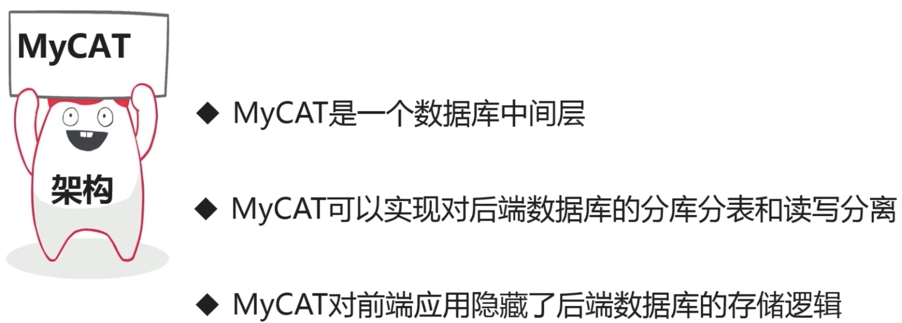

MyCat简介
MyCat 是目前最流行的基于 java 语言编写的数据库中间件，是一个实现了 MySQL 协议的服务器，前端用户可以把它看作是一个数据库代理，用 MySQL 客户端工具和命令行访问，而其后端可以用 MySQL 原生协议与多个 MySQL 服务器通信，也可以用 JDBC 协议与大多数主流数据库服务器通信，其核心功能是分库分表。配合数据库的主从模式还可实现读写分离。
MyCat 是基于阿里开源的 Cobar 产品而研发，Cobar 的稳定性、可靠性、优秀的架构和性能以及众多成熟的使用案例使得 MyCat 变得非常的强大。

MyCat主要作用
MyCat的基本元素
MyCat安装
安装步骤
1
2
3
4
5
6
7
| cd /usr/local
wget http://dl.mycat.org.cn/1.6.5/Mycat-server-1.6.5-release-20180122220033-linux.tar.gz
tar zxf Mycat-server-1.6.5-release-20180122220033-linux.tar.gz
chown mycat:mycat -R mycat/
|
1
2
3
4
5
6
7
8
9
| cd /usr/local
wget https://repo.huaweicloud.com/java/jdk/7u80-b15/jdk-7u80-linux-x64.tar.gz
tar zxf jdk-7u80-linux-x64.tar.gz
mkdir /usr/local/java
mv ./jdk1.7.0_80/ /usr/local/java
|
1
2
3
4
5
6
7
8
| # mycat目录下的 conf/wrapper.conf 文件配置了mycat运行所需要的内存大小
wrapper.java.additional.5=-XX:MaxDirectMemorySize=2G
free -m # 查看linux的内存
vi wrapper.conf
wrapper.java.additional.5=-XX:MaxDirectMemorySize=256M
|
1
2
3
4
5
6
7
8
9
10
11
12
13
14
| vim /etc/profile
export PATH=$PATH:/usr/local/mycat/bin:/usr/local/java/jdk1.7.0_80/bin
export JAVA_HOME=/usr/local/java/jdk1.7.0_80
export PATH=$JAVA_HOME/bin:$PATH
export CLASSPATH=.:$JAVA_HOME/lib/dt.jar:$JAVA_HOME/lib/tools.jar
export MYCAT_HOME=/usr/local/mycat
source /etc/profile
# 验证jdk是否安装成功
java -version
|
1
2
3
| mycat start
# mycat/logs/wrapper.log 记录了启动信息
|
课程实例使用的数据库对象
MyCat配置文件
server.xml
- 配置系统相关参数
- 配置用户访问权限
- 配置SQL防火墙以及SQL拦截功能

感谢鼓励